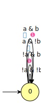
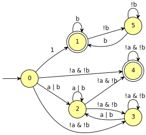
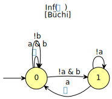

ltl2tgba
Table of Contents
This tool translates LTL or PSL formulas into different types of automata.
The inner algorithm produces Transition-based Generalized Büchi
Automata, hence the name of the tools, but ltl2tgba has grown and
now offers several options to adjust the type of automaton output.
Those options will be covered in more detail below, but here is
a quick summary:
--tgba(the default) outputs Transition-based Generalized Büchi Automata--ba(or-B) outputs state-based Büchi automata--monitor(or-M) outputs monitors--generic --deterministic(or-DG) will do whatever it takes to produce a deterministic automaton, and may output generalized Büchi, or parity acceptance.--parity --deterministic(or-DP) will produce a deterministic automaton with parity acceptance.
TGBA and BA
Formulas to translate may be specified using common input options for LTL/PSL formulas.
ltl2tgba -f 'Fa & GFb'
HOA: v1
name: "Fa & GFb"
States: 2
Start: 0
AP: 2 "a" "b"
acc-name: Buchi
Acceptance: 1 Inf(0)
properties: trans-labels explicit-labels trans-acc complete
properties: deterministic stutter-invariant
--BODY--
State: 0
[!0] 0
[0] 1
State: 1
[!1] 1
[1] 1 {0}
--END--
Actually, because ltl2tgba is often used with a single formula
passed on the command line, the -f option can be omitted and any
command-line parameter that is not the argument of some option will be
assumed to be a formula to translate (this differs from ltlfilt,
where such parameters are assumed to be filenames).
ltl2tgba honors the common options for selecting the output format.
The default output format, as shown above, is the HOA format, as this
can easily be piped to other tools.
To convert the automaton into a picture, or into vectorial format, use
--dot or -d to request GraphViz output and process the result with
dot or dotty. Typically, you could get a pdf of this TGBA using
ltl2tgba "Fa & GFb" -d | dot -Tpdf > tgba.pdf
The result would look like this (note that in this documentation we use some environment variables to produce a more colorful output by default)
Characters like ⓿, ❶, etc. denotes the acceptance sets a transition
belongs to. In this case, there is only one acceptance set, called
0, containing a single transition. You may have many transitions in
the same acceptance set, and a transition may also belong to multiple
acceptance sets. An infinite path through this automaton is accepting
iff it visit each acceptance set infinitely often. Therefore, in the
above example, any accepted path will necessarily leave the initial
state after a finite amount of steps, and then it will verify the
property b infinitely often. It is also possible that an automaton
do not use any acceptance set at all, in which any run is accepting.
Here is a TGBA with multiple acceptance sets (we omit the call to
dot to render the output of ltl2tgba from now on):
ltl2tgba "GFa & GFb" -d

The above TGBA has two acceptance sets: ⓿ and ❶. The position of
these acceptance sets ensures that atomic propositions a and b must
be true infinitely often.
A Büchi automaton for the previous formula can be obtained with the
-B option:
ltl2tgba -B 'GFa & GFb' -d

Although accepting states in the Büchi automaton are (traditionally)
pictured with double-lines, internally this automaton is still handled
as a TGBA with a single acceptance set such that the transitions
leaving the state are either all accepting, or all non-accepting. You
can see this underlying TGBA if you pass the --dot=t option (the t
requests the use of transition-based acceptance as it is done
internally):
ltl2tgba --dot=t -B 'GFa & GFb'
Using option -S instead of option -B you can obtain generalized
Büchi automata with state-based acceptance. Here is the same formula
as above, for comparison.
ltl2tgba -S 'GFa & GFb' -d
Note that ltl2tgba is not very good at generating state-based
generalized Büchi automata (GBA): all it does is generating a
transition-based one internally, and then pushing acceptance sets onto
states. On this example, the resulting GBA produced by -S is larger
than the BA produced by -B.
As already discussed on the page about common output options, various
options controls the output format of ltl2tgba:
-8, --utf8 enable UTF-8 characters in output (ignored with
--lbtt or --spin)
--check[=PROP] test for the additional property PROP and output
the result in the HOA format (implies -H). PROP
may be any prefix of 'all' (default),
'unambiguous', 'stutter-invariant', or
'strength'.
-d, --dot[=1|a|A|b|B|c|C(COLOR)|e|f(FONT)|h|k|n|N|o|r|R|s|t|v|y|+INT|<INT|#]
GraphViz's format. Add letters for (1) force
numbered states, (a) show acceptance condition,
(A) hide acceptance condition, (b) acceptance sets
as bullets, (B) bullets except for
Büchi/co-Büchi automata, (c) force circular
nodes, (C) color nodes with COLOR, (d) show
origins when known, (e) force elliptic nodes,
(f(FONT)) use FONT, (h) horizontal layout, (k) use
state labels when possible, (n) show name, (N)
hide name, (o) ordered transitions, (r) rainbow
colors for acceptance sets, (R) color acceptance
sets by Inf/Fin, (s) with SCCs, (t) force
transition-based acceptance, (v) vertical layout,
(y) split universal edges by color, (+INT) add INT
to all set numbers, (<INT) display at most INT
states, (#) show internal edge numbers
-H, --hoaf[=1.1|i|k|l|m|s|t|v] Output the automaton in HOA format
(default). Add letters to select (1.1) version
1.1 of the format, (i) use implicit labels for
complete deterministic automata, (s) prefer
state-based acceptance when possible [default],
(t) force transition-based acceptance, (m) mix
state and transition-based acceptance, (k) use
state labels when possible, (l) single-line
output, (v) verbose properties
--lbtt[=t] LBTT's format (add =t to force transition-based
acceptance even on Büchi automata)
--name=FORMAT set the name of the output automaton
-o, --output=FORMAT send output to a file named FORMAT instead of
standard output. The first automaton sent to a
file truncates it unless FORMAT starts with '>>'.
-q, --quiet suppress all normal output
-s, --spin[=6|c] Spin neverclaim (implies --ba). Add letters to
select (6) Spin's 6.2.4 style, (c) comments on
states
--stats=FORMAT, --format=FORMAT
output statistics about the automaton
Option -8 can be used to improve the readability of the output
if your system can display UTF-8 correctly.
ltl2tgba -B8 "GFa & GFb" -d

Spin output
Using the --spin or -s option, ltl2tgba will produce a Büchi automaton
(the -B option is implied) as a never claim that can be fed to Spin.
ltl2tgba -s is therefore a drop-in replacement for spin -f.
ltl2tgba -s 'GFa & GFb'
never { /* G(Fa & Fb) */
accept_init:
if
:: ((a) && (b)) -> goto accept_init
:: (!(b)) -> goto T0_S1
:: ((!(a)) && (b)) -> goto T0_S2
fi;
T0_S1:
if
:: ((a) && (b)) -> goto accept_init
:: (!(b)) -> goto T0_S1
:: ((!(a)) && (b)) -> goto T0_S2
fi;
T0_S2:
if
:: (a) -> goto accept_init
:: (!(a)) -> goto T0_S2
fi;
}
Since Spin 6 extended its syntax to support arbitrary atomic
propositions, you may also need put the parser in --lenient mode to
support these:
ltl2tgba -s --lenient '(a < b) U (process[2]@ok)'
never { /* "a < b" U "process[2]@ok" */
T0_init:
if
:: (process[2]@ok) -> goto accept_all
:: ((a < b) && (!(process[2]@ok))) -> goto T0_init
fi;
accept_all:
skip
}
Do you favor deterministic or small automata?
The translation procedure can be controled by a few switches. A first
set of options specifies the goal of the simplification routines:
whenever possible, would you prefer a small automaton (--small) or a
deterministic (--deterministic) automaton?
-a, --any no preference, do not bother making it small or
deterministic
-D, --deterministic prefer deterministic automata (combine with
--generic to be sure to obtain a deterministic
automaton)
--small prefer small automata (default)
The --any option tells the translator that it should attempt to
reduce or produce a deterministic result result: any automaton
denoting the given formula is OK. This effectively disables
post-processings and speeds up the translation.
With the -D or --deterministic option, the translator will
attempt to produce a deterministic automaton, even if this requires
a lot of states. ltl2tgba knows how to produce the minimal
deterministic Büchi automaton for any obligation property (this
includes safety properties).
With the --small option (the default), the translator will not
produce a deterministic automaton when it knows how to build smaller
automaton.
Note that options --deterministic and --small express
preferences. They certainly do not guarantee that the output will
be deterministic, or will be the smallest automaton possible.
In particular, for properties more complex than obligations, it is
possible that no deterministic TGBA exist, and even if it exists,
ltl2tgba might not find it: so a non-deterministic automaton can be
returned in this case. If you absolutely want a deterministic
automaton, read on about the --generic option below.
An example formula where the difference between -D and --small is
flagrant is Ga|Gb|Gc:
ltl2tgba 'Ga|Gb|Gc' -d
ltl2tgba -D 'Ga|Gb|Gc' -d
You can augment the number of terms in the disjunction to magnify the
difference. For N terms, the --small automaton has N+1 states,
while the --deterministic automaton needs 2N-1 states.
Add the -C or --complete option if you want to obtain a complete
automaton, with a sink state capturing that rejected words that would
not otherwise have a run in the output automaton.
Add the -U or --unambiguous option if you want unambiguous
automata to be produced. An automaton is unambiguous if any word is
recognized by at most one accepting run of the automaton (however a
word can be rejected by multiple runs, so unambiguous automata can be
non-deterministic).
The following example is an ambiguous Büchi automaton, because the are two ways to accept a run that repeats continuously the configuration \(\bar ab\).
ltl2tgba -B 'GFa -> GFb' -d
Here is an unambiguous automaton for the same formula, in which there is only one run that recognizes this example word:
ltl2tgba -B -U 'GFa -> GFb' -d

Unlike --small and --deterministic that express preferences,
options --complete and --unambiguous do guarantee that the output
will be complete and unambiguous.
A last parameter that can be used to tune the translation is the amount of pre- and post-processing performed. These two steps can be adjusted via a common set of switches:
--high all available optimizations (slow, default) --low minimal optimizations (fast) --medium moderate optimizations
Pre-processings are rewritings done on the LTL formulas, usually to
reduce its size, but mainly to put it in a form that will help the
translator (for instance F(a|b) is easier to translate than
F(a)|F(b)). At --low level, only simple syntactic rewritings are
performed. At --medium level, additional simplifications based on
syntactic implications are performed. At --high level, language
containment is used instead of syntactic implications.
Post-processings are cleanups and simplifications of the automaton produced by the core translator. The algorithms used during post-processing are
- SCC filtering: removing useless strongly connected components, and useless acceptance sets.
- direct simulation: merge states based on suffix inclusion.
- iterated simulations: merge states based on suffix inclusion, or prefix inclusion, in a loop.
- WDBA minimization: determinize and minimize automata representing obligation properties.
- degeneralization: convert a TGBA into a BA
- BA simulation (again direct or iterated)
The chaining of these various algorithms depends on the selected
combination of optimization level (--low, --medium, --high),
translation intent (--small, --deterministic) and type of
automaton desired (--tgba, --ba).
A notable configuration is --any --low, which will produce a TGBA as
fast as possible. In this case, post-processing is disabled, and only
syntactic rewritings are performed. This can be used for
satisfiability checking, although in this context even building an
automaton is overkill (you only need an accepted run).
Finally, it should be noted that the default optimization options
(--small --high) are usually overkill. --low will produce good
automata most of the time. Most of pattern formulas of genltl will
be efficiently translated in this configuration (meaning that --small
--high will not produce a better automaton). If you are planning to
generate automata for large family of pattern formulas, it makes sense
to experiment with the different settings on a small version of the
pattern, and select the lowest setting that satisfies your
expectations.
Deterministic automata with --generic --deterministic
The --generic (or -G) option allows ltl2tgba to use more
complex acceptance. Combined with --deterministic (or -D) this
allows the use of a determinization algorithm that produces
automata with parity acceptance.
For instance FGa is the typical formula for which not
deterministic TGBA exists.
ltl2tgba "FGa" -D -d.a
But with --generic, ltl2tgba will output the following Rabin automaton:
ltl2tgba "FGa" -G -D -d.a

Note that determinization algorithm implemented actually outputs
parity acceptance, but Fin(0)&Inf(1) can be interpreted either as
Rabin 1 or parity min odd 2.
The spot-x(7) man page lists a few -x options (det-scc,
det-simul, det-stutter) of the determinization algorithm that are
enabled by default, but that you may want to disable for experimental
purpose.
For instance the following deterministic automaton
ltl2tgba "F(a W FGb)" -G -D -d.a
would be larger if SCC-based optimizations were disabled:
ltl2tgba "F(a W FGb)" -x '!det-scc' -G -D -d.a
While the --generic option currently only builds automata with
generalized-Büchi or parity acceptance, this is very likely to change
in the future.
Deterministic automata with --parity --deterministic
Using the --parity (or upper-case -P) option will force the
acceptance condition to be of a parity type. This has to be
understood in the sense of the HOA format, where:
- multiple parity types are defined (
min odd n,min even n,max odd n, andmax even nwherenis the number of acceptance sets), and - the parity acceptance is only a type of acceptance condition, i.e., a formula expressed in terms of acceptance sets, and does not have additional constraints on these sets. In particular it is not necessary the case that each transition or state belongs to exactly one acceptance set (this is the "colored" property, see below).
Under these assumptions, Büchi acceptance is just one kind of parity
(in HOA Buchi is equivalent to parity max even 1 or parity min
even 1), Rabin with one pair is also a parity acceptance (Rabin 1
is equivalent to parity min odd 2), and Streett with one pair as
well (Streett 1 is equivalent to parity max odd 2).
In the current implementation, using ltl2tgba --parity (without
--deterministic) will always produce a Büchi automaton, and when
--deterministic (or -D) is added, it will produce an deterministic
automaton with Büchi acceptance (parity min even 1) or with parity
min odd n acceptance, because the latter is the type of parity
acceptance that our determinization procedure outputs.
For instance, FGa gets translated into an automaton with Rabin 1
acceptance (another name for parity min odd 2):
ltl2tgba "FGa" -D -P -d.a
And GFa & GFb gets translated into a Büchi automaton (another name
for parity min even 1):
ltl2tgba "GFa & GFb" -D -P -d.a

If we really want to use the same style of parity acceptance for all outputs,
we can specify it as an argument to the --parity option. For instance
ltl2tgba "GFa & GFb" -D -P'min odd' -d.a
The --colored-parity (or lower-case -p) option works similarly to
--parity, but additionally requests that the automaton be colored.
I.e., each transition (or state if state-based acceptance is
requested) should belong to exactly one acceptance set.
ltl2tgba "GFa & GFb" -D -p -d.a
ltl2tgba "GFa & GFb" -D -p'min odd' -d.a
Note that all these options can be combined with state-based acceptance if needed:
ltl2tgba "GFa & GFb" -D -S -p'max even' -d.a
Translating multiple formulas for statistics
If multiple formulas are given to ltl2tgba, the corresponding
automata will be output one after the other. The default output
format HOA is designed to allow streaming automata this way to build
processing pipelines, but Spot's automaton parser can also read a
stream of automata in other formats.
Another situation where passing many formulas to ltl2tgba is useful
is in combination with the --stats=FORMAT option. This option will
output statistics about the translated automata instead of the
automata themselves. The FORMAT string should indicate which
statistics should be output, and how they should be output using the
following sequence of characters (other characters are output as-is):
%< the part of the line before the formula if it
%> the part of the line after the formula if it comes
%% a single %
%a number of acceptance sets
%c, %[LETTERS]c number of SCCs; you may filter the SCCs to count
%d 1 if the output is deterministic, 0 otherwise
%e number of reachable edges
%f the formula, in Spot's syntax
%F name of the input file
%g, %[LETTERS]g acceptance condition (in HOA syntax); add brackets
%h the automaton in HOA format on a single line (use
%[opt]h to specify additional options as in
%L location in the input file
%m name of the automaton
%n number of nondeterministic states in output
%p 1 if the output is complete, 0 otherwise
%r wall-clock time elapsed in seconds (excluding
%R, %[LETTERS]R CPU time (excluding parsing), in seconds; Add
%s number of reachable states
%t number of reachable transitions
%w one word accepted by the output automaton
%x, %[LETTERS]x number of atomic propositions declared in the
For instance we can study the size of the automata generated for the
right-nested U formulas as follows:
genltl --u-right=1..8 | ltl2tgba --stats '%s states and %e edges for "%f"'
2 states and 2 edges for "p1" 2 states and 3 edges for "p1 U p2" 3 states and 6 edges for "p1 U (p2 U p3)" 4 states and 10 edges for "p1 U (p2 U (p3 U p4))" 5 states and 15 edges for "p1 U (p2 U (p3 U (p4 U p5)))" 6 states and 21 edges for "p1 U (p2 U (p3 U (p4 U (p5 U p6))))" 7 states and 28 edges for "p1 U (p2 U (p3 U (p4 U (p5 U (p6 U p7)))))" 8 states and 36 edges for "p1 U (p2 U (p3 U (p4 U (p5 U (p6 U (p7 U p8))))))"
Note that because no formula have been passed as argument to
ltl2tgba, it defaulted to reading them from standard input. Such a
behaviour can be requested explicitly with -F - if needed (e.g., to
read from standard input in addition to processing other formula
supplied with -f).
When computing the size of an automaton, we distinguish transitions and edges. An edge between two states is labeled by a Boolean formula and may in fact represent several transitions labeled by compatible Boolean assignment.
For instance if the atomic propositions are x and y, an edge
labeled by the formula !x actually represents two transitions
labeled respectively with !x&y and !x&!y.
Two automata with the same structures (states and edges) but differing labels, may have a different count of transitions, e.g., if one has more restricted labels.
More examples of how to use --stats to create CSV
files are on a separate page.
Building Monitors
In addition to TGBA and BA, ltl2tgba can output monitor using the
-M option. These are finite automata that accept all prefixes of a
formula. The idea is that you can use these automata to monitor a
system as it is running, and report a violation as soon as no
compatible outgoing transition exist.
ltl2tgba -M may output non-deterministic monitors while ltl2tgba
-MD (short for --monitor --deterministic) will output the minimal
deterministic monitor for the given formula.
ltl2tgba -M '(Xa & Fb) | Gc' -d
ltl2tgba -MD '(Xa & Fb) | Gc' -d
Because they accept all finite executions that could be extended to
match the formula, monitor cannot be used to check for eventualities
such as F(a): indeed, any finite execution can be extended to match
F(a).
For more discussion and examples about monitor, see also our separate page showing how to build them in Python and C++.
Because Monitors accept every recognized run (in other words, they
only reject words that are not recognized), it makes little sense to
use option -C to request complete monitors. If uou combine -C
with -M, the result will output as a Büchi automaton if (and only
if) a sink state had to be added. For instance, here is the
"complete" version of the previous monitor.
ltl2tgba -C -M -D '(Xa & Fb) | Gc' -d